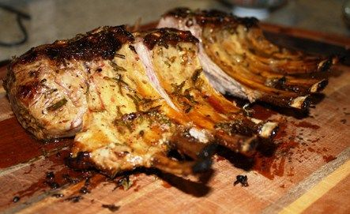

Viking Chop
Return to Front Page

Description
A meal fit for a viking!
Ingredients
- 1 leg of lamb
- Honey
- Mustard
- Sliced garlic
- Rosemary
- Salt and pepper
Recipe Instructions
- First, insert sliced garlic into pockets.
- Cover the leg of lamb with honey and mustard.
- Salt and freshly ground pepper, I don't know if the Vikings used salt and pepper, but I do.
- Put fresh, snipped rosemary all over the lamb.
- Wrap the entire lamb well in foil and put into oven or grill.